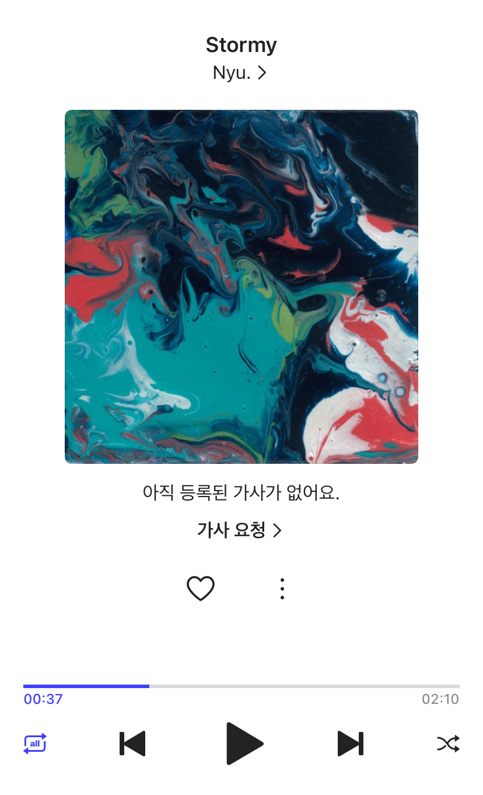
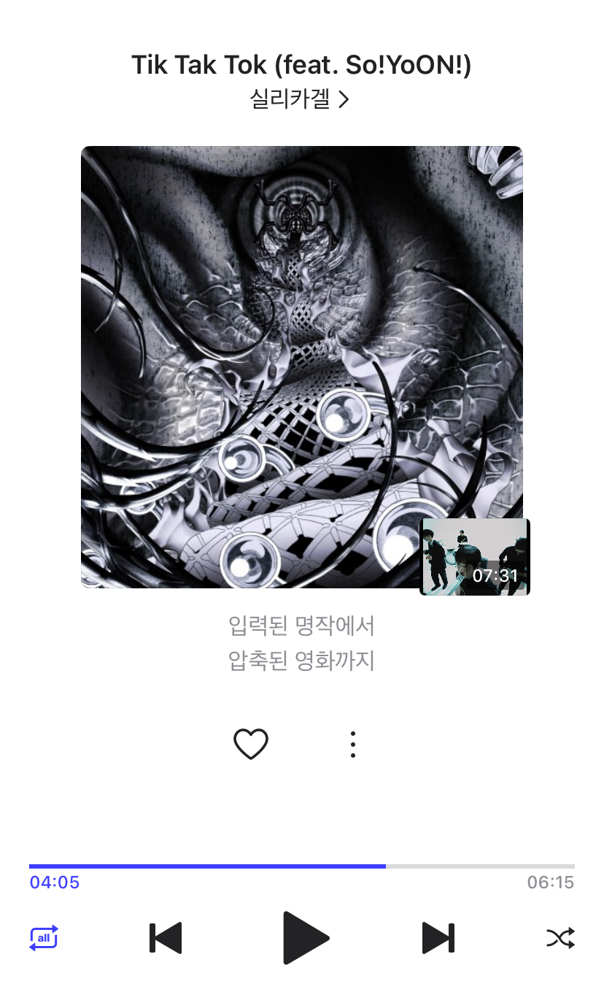
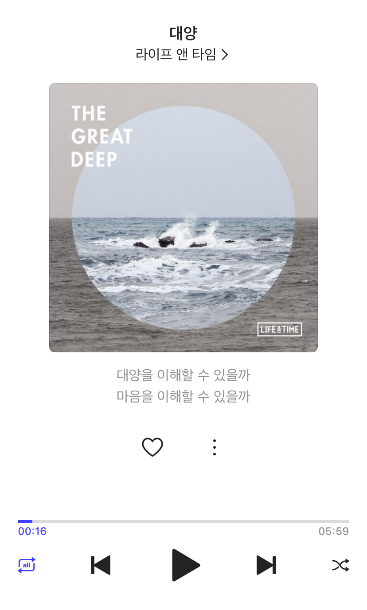
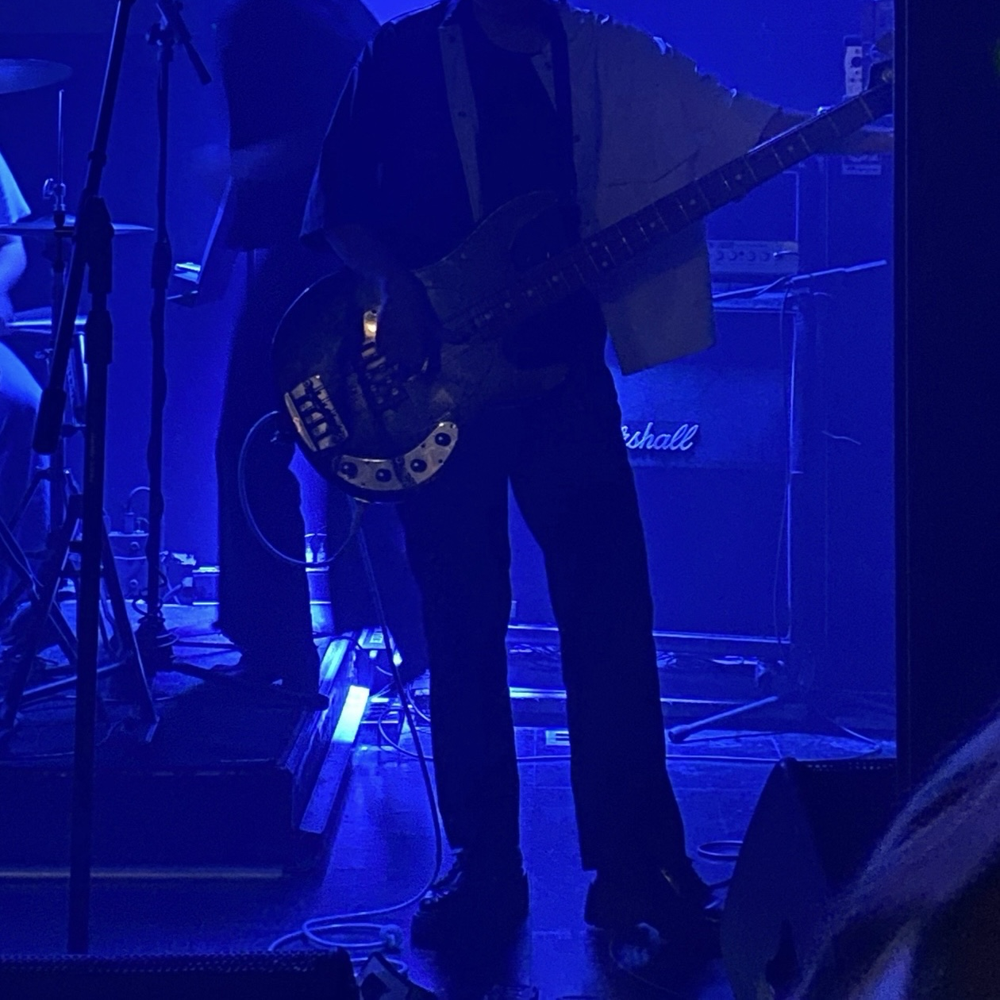
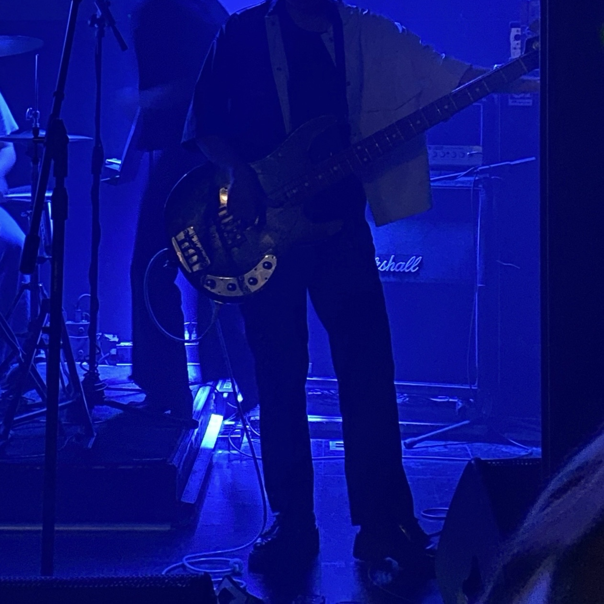
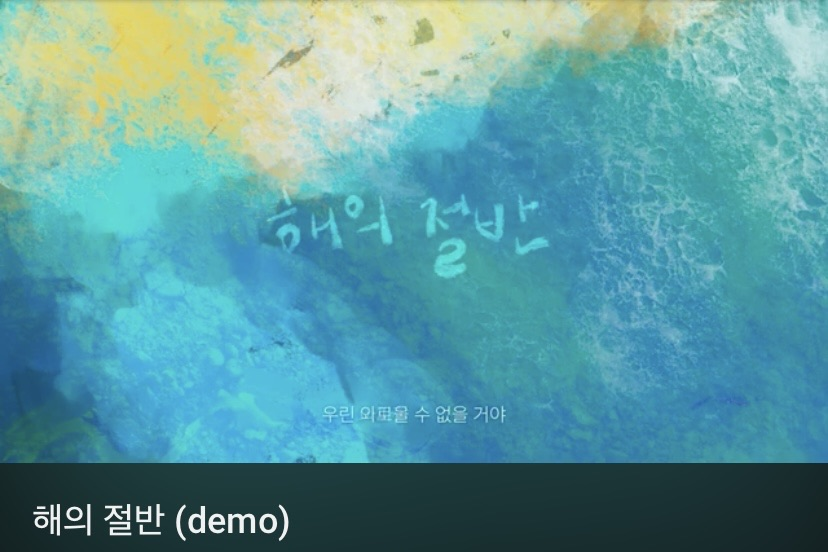
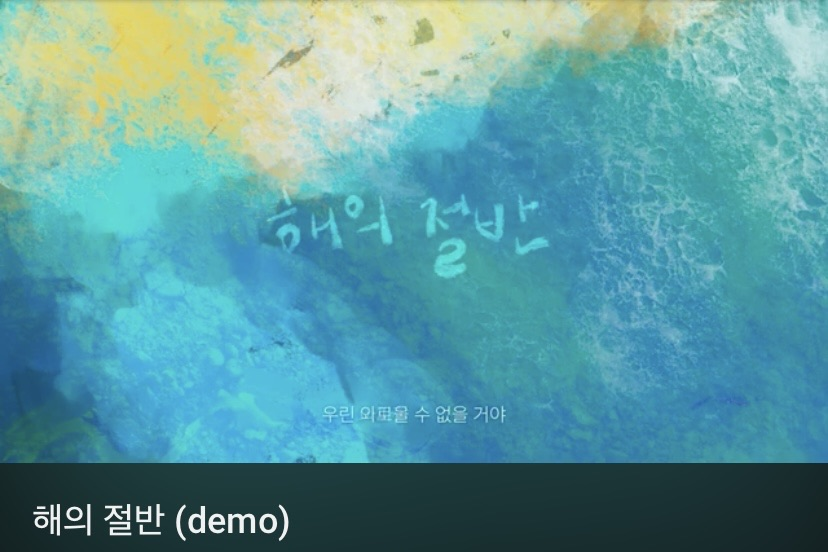

좋아하는 노래



드럼을 듣는 걸 좋아합니다. 같은 박자여도 각자만의 해석이 담기면 다른 결과를 내는 것이 포인트입니다.
안녕하세요, 블루입니다 😀
저는 평범함에 안주하지 않고, 언제나
창의적인 해결책을 찾아 나서는 것을 좋아해요.
새로운 아이디어가
떠오를 때마다 설렘을 느끼고, 그것이 현실로 구현될 때마다 큰 성취감을
경험합니다.
이를 통해 세상에 더 나은 가치를 더해가는 것이 제
목표입니다.
 


 



드럼을 듣는 걸 좋아합니다. 같은 박자여도 각자만의 해석이 담기면 다른 결과를 내는 것이 포인트입니다.


뱅크시의 작품에는 독특한 사회적 메세지가 담겨있습니다. 간단한 작품처럼 보이지만 깊은 의미가 담겨있어, 단순 미술을 넘어 생각을 자극하는 경험이 됩니다.